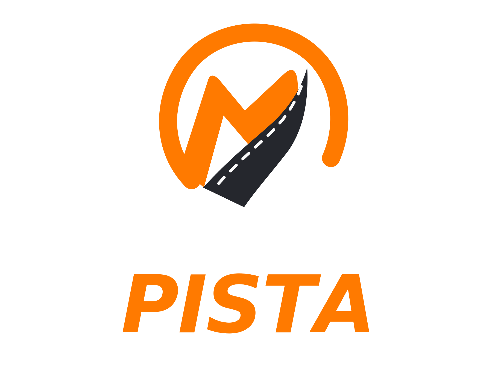
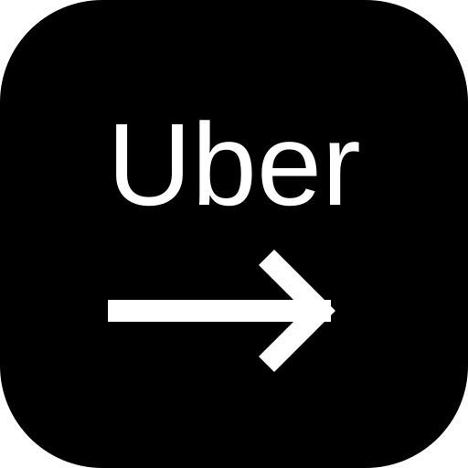
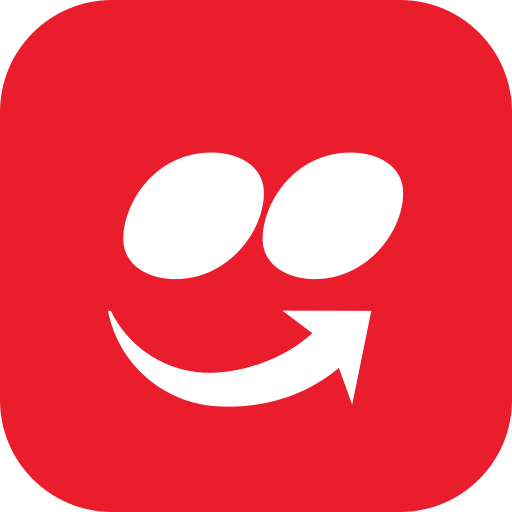
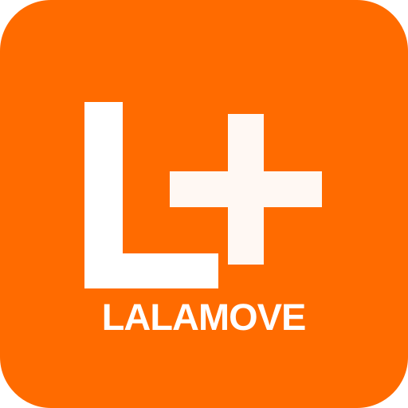
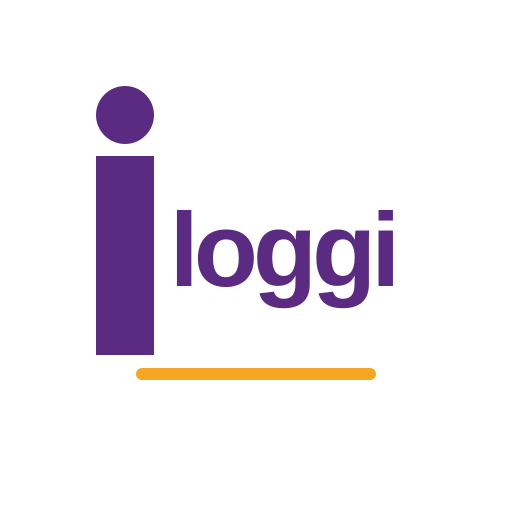
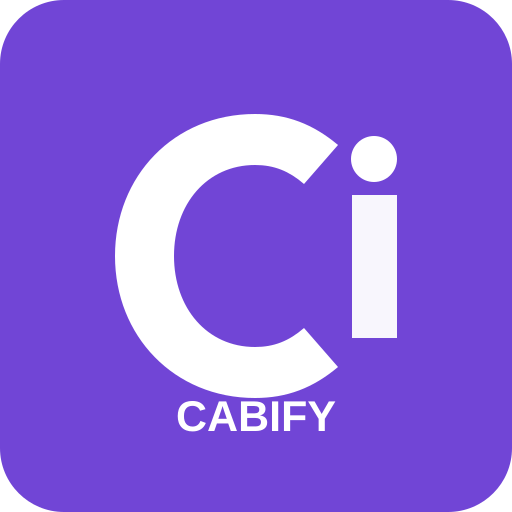

Vale a pena? Na hora.
Lê as ofertas da Uber, 99, inDrive, iFood, Rappi, Lalamove, Loggi, Cabify e outros apps e mostra um semáforo verde, amarelo ou vermelho com R$/km, R$/hora e distância até o passageiro.
O Menos Pista é um copiloto para motoristas de aplicativo e entregadores: ele lê as ofertas que chegam na Uber, 99, inDrive, iFood e outros apps e mostra na hora, num card na tela, se a corrida vale a pena — com R$/km, R$/hora e o lucro já descontando o custo do seu veículo.

Feito para a rotina de quem roda com diferentes plataformas

Uber
iFood
Lalamove
Loggi
CabifyFerramentas pensadas para ajudar você a tomar decisões melhores e enxergar o resultado real do seu trabalho.
Lê as ofertas da Uber, 99, inDrive, iFood, Rappi, Lalamove, Loggi, Cabify e outros apps e mostra um semáforo verde, amarelo ou vermelho com R$/km, R$/hora e distância até o passageiro.
Calcula o lucro com o custo do seu veículo (combustível, manutenção, pneus, depreciação e custos fixos) e respeita os seus limites de distância, tempo e valor mínimo.
Guarde as ofertas analisadas, registre entradas e despesas, acompanhe metas do dia, da semana e do mês e exporte seus dados quando quiser.
Saber quanto entrou não significa saber quanto sobrou. O Menos Pista ajuda você a enxergar os custos que ficam pelo caminho.
Organize ganhos, despesas, quilometragem e horas de trabalho.
Considere combustível, manutenção e outros gastos da atividade.
Use indicadores para avaliar seu lucro estimado e planejar melhor a rotina.
Valores fictícios. Os resultados reais dependerão dos dados registrados, dos custos informados e das funcionalidades implementadas.
Ninguém precisa pagar assinatura para usar as ferramentas essenciais. O modo free é gratuito e mantido por anúncios; quem quiser apoiar o projeto vira doador.
As ferramentas essenciais são gratuitas, sem assinatura obrigatória. A manutenção do app é financiada por anúncios do Google AdMob.
Com um apoio mensal, trimestral ou anual pelo Mercado Pago (Mercado Livre), sua conta vira Pro: menos anúncios (remove parte deles, não todos) e recursos Pro liberados enquanto o apoio estiver ativo.
Importante: o apoio é pago só no site, na página Apoiar, pelo Mercado Pago; o Menos Pista não recebe dados do seu cartão. O apoio é doação voluntária, sem reembolso, e os benefícios saem automaticamente em caso de estorno, contestação ou cancelamento no Mercado Pago. Veja as condições nos Termos de uso e na Política de privacidade.
Organize seus custos, acompanhe seus resultados e faça escolhas mais conscientes na sua rotina de trabalho.
BAIXAR O MENOS PISTA Feito para quem faz da rua o seu local de trabalho.